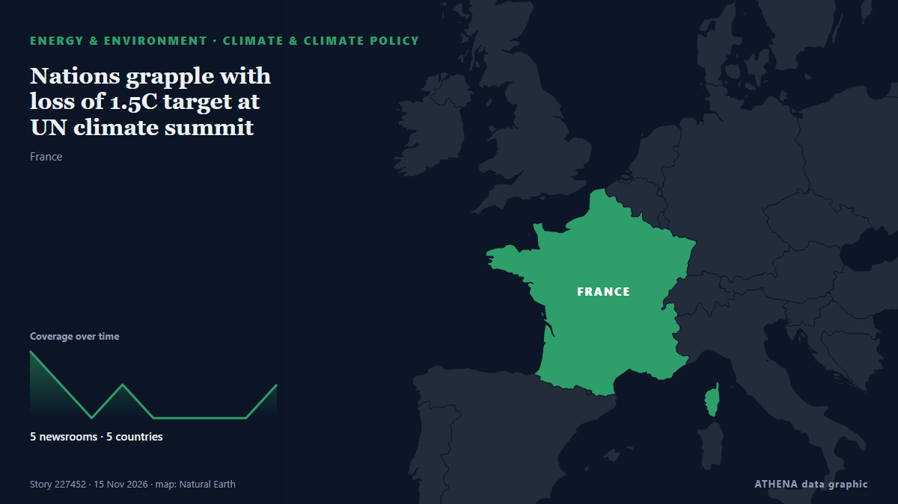

Ενέργεια, Πόροι & Περιβάλλον
ΧορηγούμενοΠαρουσιάζεται από  Cybernetics and Artificial Intelligence Lab Welcome to the Cybernetics and Artificial Intelligence Laboratory, established at the Department of Business Administration of the National and Kapodistrian University of Athens. The lab is headed by Professor Dimitrios Thomakos. The lab aims to do research that can be published in top venues. Our research uses tools and methods of Artificial Intelligence, and lies in the following areas: - Forecasting - Decision making - Cyber security - Finance We are always looking forward to collaborating with exceptional students!
Cybernetics and Artificial Intelligence Lab Welcome to the Cybernetics and Artificial Intelligence Laboratory, established at the Department of Business Administration of the National and Kapodistrian University of Athens. The lab is headed by Professor Dimitrios Thomakos. The lab aims to do research that can be published in top venues. Our research uses tools and methods of Artificial Intelligence, and lies in the following areas: - Forecasting - Decision making - Cyber security - Finance We are always looking forward to collaborating with exceptional students!
Οι τίτλοι των ειδήσεων παρουσιάζονται στα αγγλικά, όπως δημοσιεύτηκαν.

Κλίμα & κλιματική πολιτικήNations grapple with loss of 1.5C target at UN climate summit
The world has already warmed by about 1.4°C above pre-industrial levels, with the UN warning in September that breaching the Paris Agreement’s 1.5°C threshold was imminent and unavoidable. από Free Malaysia Today
| 2 Νοε | 121 |
|---|---|
| 3 Νοε | 93 |
| 4 Νοε | 99 |
| 5 Νοε | 96 |
| 6 Νοε | 60 |
| 7 Νοε | 47 |
| 8 Νοε | 55 |
| 9 Νοε | 110 |
| 10 Νοε | 110 |
| 11 Νοε | 114 |
| 12 Νοε | 89 |
| 13 Νοε | 68 |
| 14 Νοε | 30 |
| 15 Νοε | 11 |
IEA forecasts global oil surplus in late 2026
Shafaq News- Paris The International Energy Agency (IEA) on Friday forecast a global oil surplus of 1.7 million barrels per day (bpd) in the fourth quarter of 2026, with supply averaging 105 million… από Shafaq News (English)
Iraq PM sacks officials over oil smuggling in pro-Iran group bastion
The Iraqi Prime Minister dismissed nine officials following an investigation into oil smuggling linked to the Iran-backed Kataeb Hezbollah group. από Arab News
Delhi overtakes Lahore as world's most polluted city as air quality drops
Pollution is a seasonal problem in many parts of northern India and neighbouring Pakistan. από Express Tribune
Protesters, UN urge swift climate deal
Civil society groups from Bangladesh, Bhutan and Nepal call for predictable, grant-based adaptation funding. από The Business Standard (Bangladesh) (working feed)
As smog hangs over Lahore, Pakistan’s new pollution squad races to douse stubble fires
Lahore’s new pollution squad is actively fighting smog by extinguishing fires caused by illegal stubble burning in Punjab. από Arab News
Rosatom to increase workforce at Bushehr nuclear plant to 300
Russia’s state nuclear corporation Rosatom plans to increase its workforce at Iran’s Bushehr Nuclear Power Plant from the current 180 employees to 300 in the near future, as it moves to resume… από Tehran Times
Afghanistan's olive groves give farmers relief from climate crisis
The United Nations Climate Change Conferences (COP) are among the most important international forums for examining the impacts of climate change, coordinating global efforts to address the crisis… από Khaama Press
All Blacks v Wales: Live updates from the Nations Championship test in Cardiff
Cardiff once again is the scene of a historic defeat for the All Blacks. από New Zealand Herald
UN chief urges world to end fossil fuel addiction at COP31
UN chief António Guterres called for a new global climate justice agreement at COP31 on Wednesday, urging governments to tax fossil fuel companies to help countries bearing the brunt of a crisis they… από UN News
Fuel price freefall continues despite supply threats
Fuel prices are poised for another round of substantial cuts next week, continuing this week's massive rollbacks despite renewed threats to global oil supplies… από Daily Tribune
Ukraine Strikes Samara Urals Oil Hub and Lipetsk-2 Airbase
The General Staff of the Armed Forces of Ukraine announced on Nov. από Kyiv Post
‘Crude but viable device’ made safe in Dublin
A "crude but viable" device found at a building in Merrion Square today has been made safe, gardaí have said. από RTÉ News
Turkish investors show interest in buying 49% shares in Akkuyu project — Rosatom
The negotiations are underway, CEO Alexey Likhachev said. από TASS (English)
Nepal flood victims' families may wait up to a year for death certificates
KUALA LUMPUR: Families of Malaysians missing in the Nepal floods could face another three to 12 months, or longer, to obtain certificates of presumption of death, Malaysia Solidarity Families in Hope… από New Straits Times
PACNEWS ONE, 13 NOVEMBER 2026
In this bulletin: 1. UN — UN Climate chief Stiell urges countries to act on methane, warning of economic and climate costs 2. από Islands Business (Fiji)
Earthquake Of Magnitude 3.9 Strikes Shimla, No Damage Reported
According to the National Centre for Seismology, the earthquake struck around 9.50 pm at a depth of 10 kilometres. από NDTV
M.P. man dies after crude bomb disguised as rasgulla explodes in his mouth
Two men have been arrested in Dindori district after an acquaintance allegedly offered the victim a crude explosive used to kill wild boars, claiming it was a sweet. από The Hindu
‘Scandal of gigantic proportions’: Congress on Adani slashing Maharashtra power project cost by 99%
Adani Green Energy Limited has sought to sharply revise the cost of its 1,500 megawatt hydropower project in Maharashtra's Satara district downwards to ₹56.75 crore from ₹5,675 crore, a newspaper… από The Hindu
Pakistan-Sri Lanka First Test Ends in a Draw
Pakistan declared at 261/7, with Saud Shakeel unbeaten on 81. από News of Bahrain
Nuclear watchdog increasingly concerned about Iranian enrichment plant
IAEA chief Rafael Grossi said in March his agency believed a significant amount of Iran's most highly enriched uranium was in the tunnel complex at Isfahan. από Haaretz (English)
Norway's top court rules oil licenses invalid in landmark ruling
The country's Supreme Court ruled that three oil licenses granted by the government in the North Sea were invalid since their emissions impact had not adequately been accounted for. από Le Monde (English)
EU outlines ‘winter’ assistance for Ukraine
The European Union is mobilizing additional resources through the rescEU mechanism to step up support for Ukraine ahead of the winter season and amid Russian attacks on the country’s critical… από Ukrinform (English)
‘Erdogan did not invite Christodoulides to Cop31’
President Nikos Christodoulides’ invitation to attend the Cop31 climate summit in Antalya came from the summit’s secretariat rather than Turkish President Recep Tayyip Erdogan, Turkish newspaper… από Cyprus Mail
10 killed in clashes in Guinea after artisanal mining ban
CONAKRY, Nov 13 - Ten people were killed in violent clashes with defence and security forces in a gold-producing region in northeastern Guinea, the country's Ministry of Territorial Administration… από The Straits Times
Exhibition on Critical Raw Materials Highlights Their Importance for Everyday Life
Nova Scotia and Massachusetts team up to explore offshore wind energy
Nova Scotia and Massachusetts have struck a deal to learn more about the potential for the Canadian province’s emerging offshore wind industry. από The Canadian Press (via CityNews)
Google rolls out Gemini 4 Hydrogen, finally replacing 3.8 Flash
Gemini 4 Hydrogen isn't getting a slow, security-conscious release like Carbon and Argon. από Ars Technica
Gulf Oil Exports Recover as Hormuz Shipping Struggles
Global oil markets are beginning to recover from the Iran war, but shipping through the Strait of Hormuz remains severely disrupted, with vessel traffic roughly 65% below pre-conflict levels and... από gCaptain
OPEC+ countries increase oil production by 1.94 mln bpd in October
The alliance’s oil production totaled 32.817 mln bpd. από TASS (English)
Germany Is Dismantling a Nord Stream Power Plant for Ukraine
A power plant built at the landfall of the Nord Stream gas pipelines in northeastern Germany was shut down after the pipelines were sabotaged. από OilPrice.com
The planet ‘is being killed’, Greta Thunberg tells Cop31 climate summit
Swedish activist criticised world governments for their failure to prevent environmental breakdown The planet is “not dying, it is being killed and we know by who”, said Greta Thunberg, who… από The Guardian
Emine Erdoğan showcases Türkiye's zero waste drive at COP31
Türkiye's first lady, Emine Erdoğan, inaugurated the Zero Waste Museum in the Blue Zone of the 31st United Nations Climate Change Conference (COP31) in Antalya on Thursday. από Daily Sabah